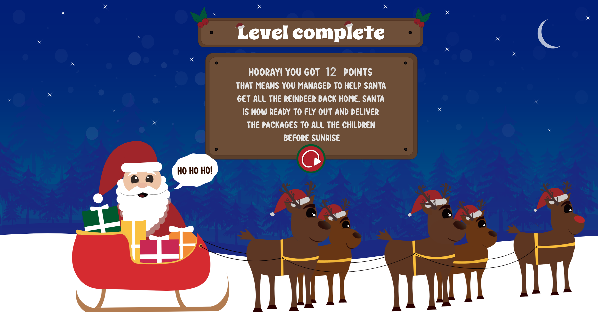
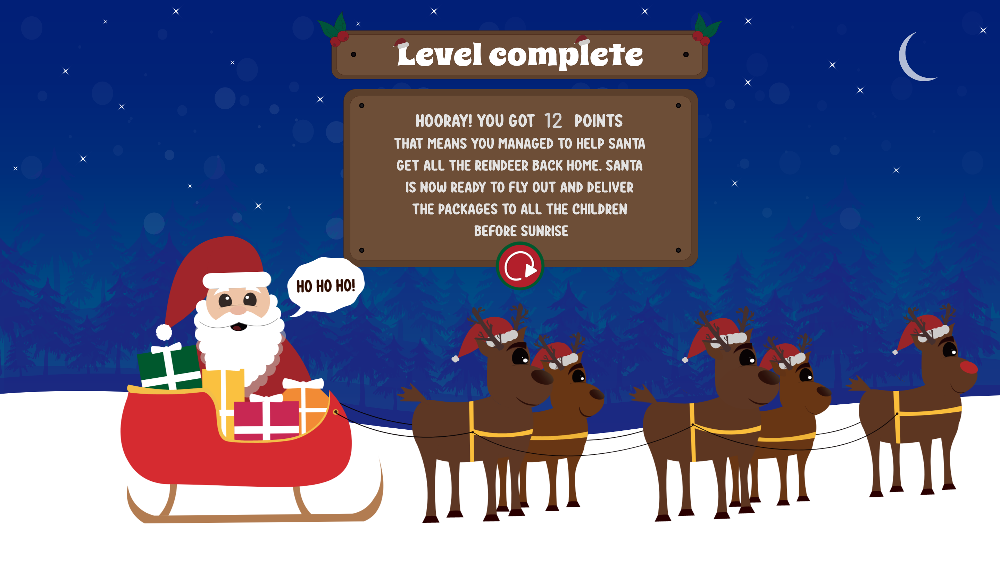

Tema 04
Grundlæggende animation
Temaet ”grundlæggende animation” var et 4 ugers forløb som foregik individuelt. På dette forløb skulle vi lære at fremstille interaktive brugergrænseflader, som er elementer der engagerer og motiverer (fanger brugerens interrese) brugeren. De kan f.eks. bruges i forbindelse med burger menuer, slideshows, snap scrolls osv. For at gøre processen sjovere skulle vi udarbejde vores eget spil via Javascript, CSS og HTML.
Mit spil hedder ”Reindeers on the loose” og er et julespil som handler om at julemanden har pakket kanen og er klar til at aflevere pakkerne. Men det visser sig at drillenisserne har været på spil. De har nemlig sluppet
rensdyrene løs. Julemanden har derfor brug for din hjælp til at hente
rensdyrende hjem igen vigtigst af alle Rudolph, så han kan flyve
afsted før solopgang.
Proces
Som i de andre forløb startet vi igen ud med et moodboard, med inspiration til et ønsket spil. Her finder jeg inspiration fra bl.a. tegnefilms figurer med runde former og flat design.
Næste step i processen var en paper prototype, det er en hurtigere måde at teste ens ide for et produkt på.
Rentegning i Illustrator.
Efter jeg havde testet min paper prototype af skulle jeg udvikle mit spildesign efter moderne konventioner og rentegne grafikken i Adobe illustrator. Vi skulle udarbejde figur elementer, spil elementer, baggrundsdesign, UI-elementer, typografi, farver og komposition. Her endte jeg med at gå med et meget detaljeret baggrundsdesign, men nogle mindre detaljeret spil elementer, da jeg ønskede et flat-design look.

 



Spil elementer


UI - elementer


Aktivitets – og statemachine diagram
For at gøre kode processen nemmer skulle jeg udarbejde en aktivitets – og statemachine diagram, som blev brugt til at planlægge et mere komplicerede interaktiv flow.

Indspilning af lyd
Da spillet skulle indholde baggrundsmusik, samt spil - og UI elementer skulle indeholde selvindspillet lyde. Lærte jeg også at arbejde i programmet Audition og hvordan man indsatte lyd i Brackets.
Test af spil.
Som den sidste del af temaet skulle spillet testes. Det foregik i grupper, hvor vi skulle hver især udarbejde en survey med spørgsmål vi ønskede at få svar på omkring vores spil for at kunne gøre de sidste rettelser.
Feedback
Den feedback jeg modtog udfra min survey og underviser måtte jeg fortage nogle små ændringer. Jeg valgte bl.a. at gøre spillet hurtigere, da spillet var fornemt. Derefter indsat jeg nogle animationer på start, gameover og vinderskærm. Det gjorde jeg, fordi jeg fik af vide at spillet mangle noget liv på skærmmende. Havde jeg haft mere tid kunne jeg også have udarbejde nogle animationer på selve bagrunden på spilleskærmen. f.eks. blinkene stjerne eller andet som skabet mere liv.